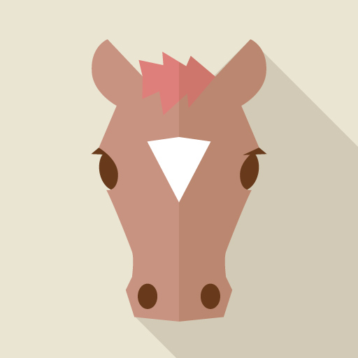
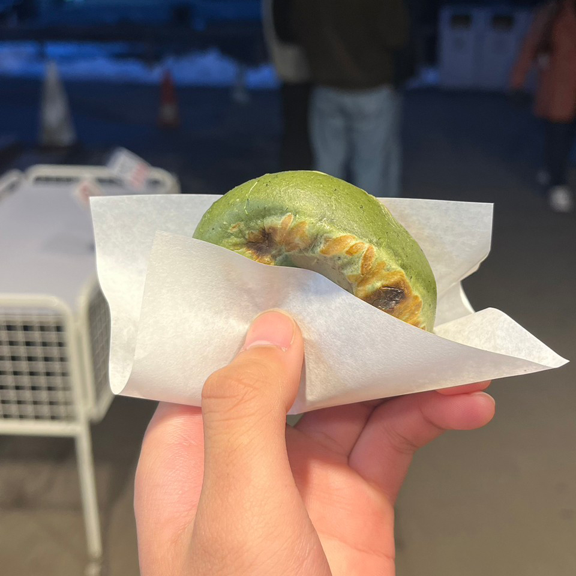
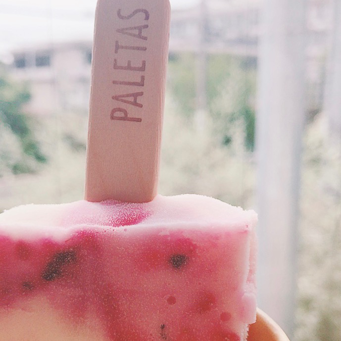
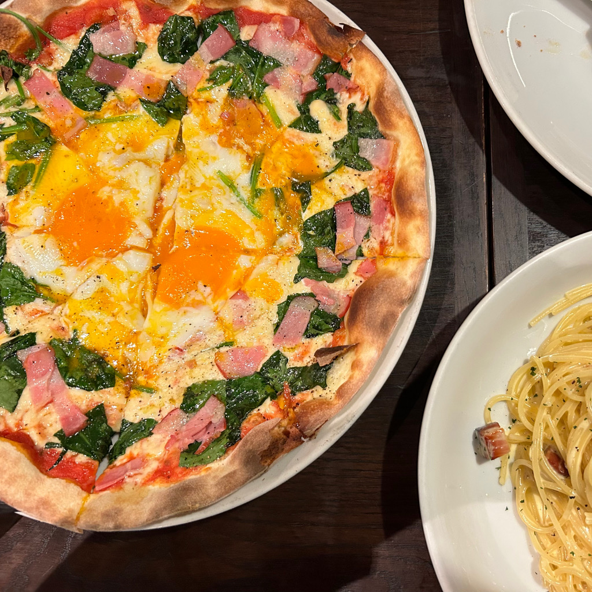
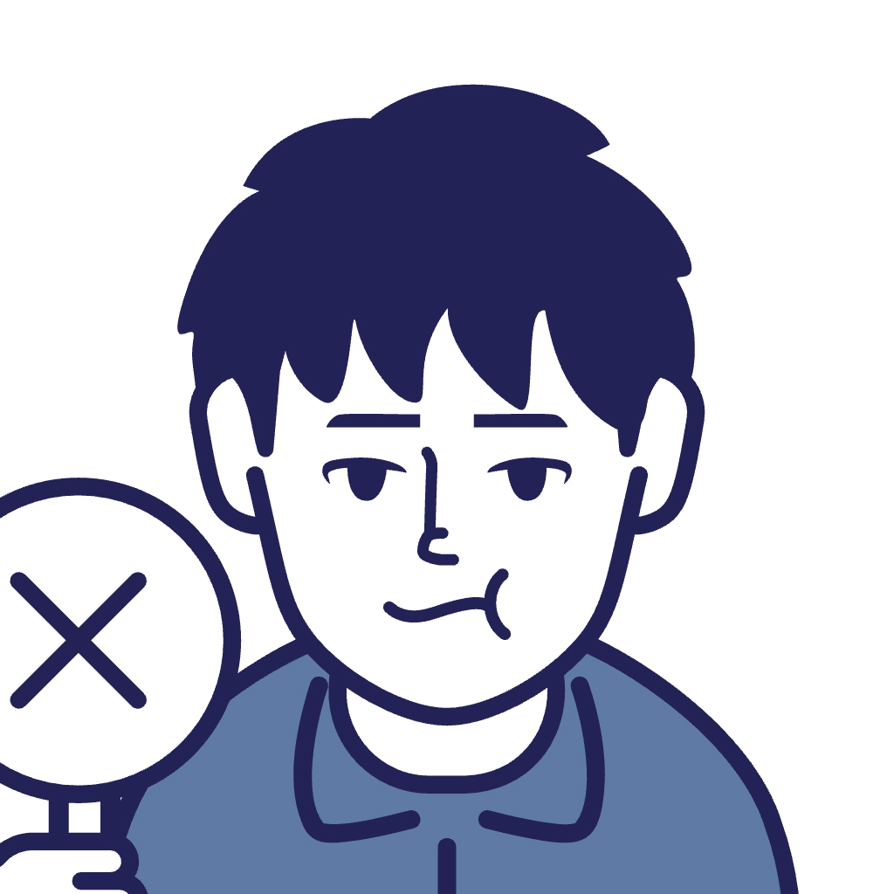
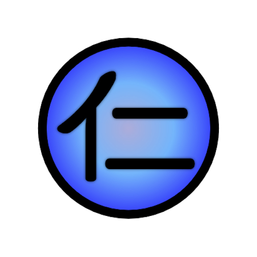
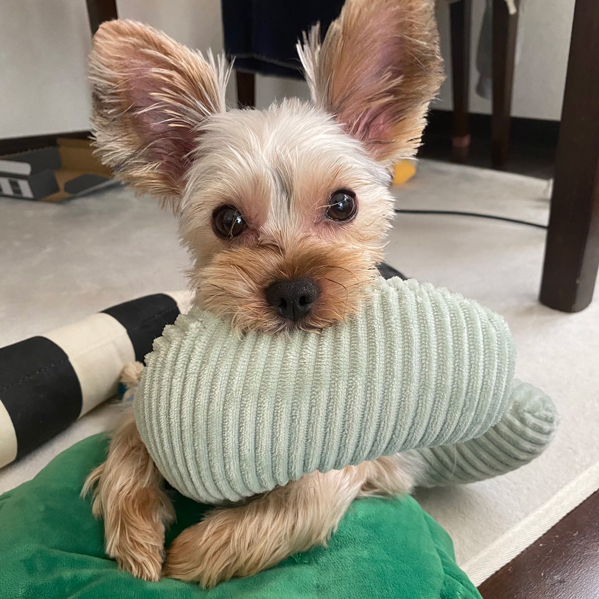

- 2023.01.24プロジェクト活動がスタートしました。
- 2023.02.27外部から講師の方をお呼びしお話を伺いました。
- 2023.03.29外部のワークショップに参加し見識を深めました。
- 2023.04.12他のプロジェクトと交流しました。
- 2023.05.21BBQを行いプロジェクト内で親睦会を行いました。
- 2023.06.30プロタイプのテストプレイを行いました。
- 2023.07.07webページ（仮）をオープンしました。
- 2023.07.15中間発表会にてこれまでの活動を報告しました。
- 2023.08.18複数の教授をお呼びしプロジェクト活動に対するご意見をいただきました。
- 2023.09.13制作物の名称が決定しました。
- 2023.10.04制作物の本格的な開発がスタートしました。
- 2023.11.29試遊会の開催を決定しました。
- 2023.12.01webページがオープンしました。
- 2023.12.06試遊会を開催しました。
プロジェクトテーマ
自己開示によるグループワーク環境の整備 〜話しにくいを変えていく〜
プロジェクト概要
大学ではグループワークを行う授業は少なくない。中にはグループワークでメンバーと打ち解けられず、孤立してしまったり、不満を抱えたりする人がいる。
本プロジェクトでは、こうした問題がグループワークに悪影響を及ぼしていると考え、特に原因として、自己肯定感と現状維持バイアスに着目し、2つのプロダクトを開発した。
1つ目の「Randall
の部屋」は、グループワークにおける悩みをあらかじめ共有し、解決策としての話し合いのルールを考えることによって、どうすれば話し合いをしやすくなるかを考えるためのプロダクトである。
2つ目の「Alice
の部屋」は、架空のキャラクターを演じながら話し合いをすることで、心理的な安全地帯を作って話しやすくするとともに、他者の視点に立って考えられるようにして、話す練習をするためのプロダクトである。
これらのプロダクトをグループの話し合いの前に使用することで、自分の言いたいことが言えるような環境を作り、グループワークが円滑に進むようになることを目指した。
キーワード
- #自己肯定感
- #現状維持バイアス
- #コミュニケーション
- #グループワーク
- #アサーション
- #議論のルール
Picture
メンバー紹介
担当の先生
望月俊男 プロジェクトメンバー
黒川 優輝 (NE21-1087G) 金子 嘉光 (NE21-1133G)  宇田川 洸太 (NE21-1134E)  稲垣 良規 (NE21-1153K) 山下 恵莉 (NE21-1170H)  秋元 律紀 (NE21-1174A)  脇屋 仁義 (NE21-1180D)  古市 瑞樹 (NE21-1207E)  諌山 晴大 (NE21-1227H)